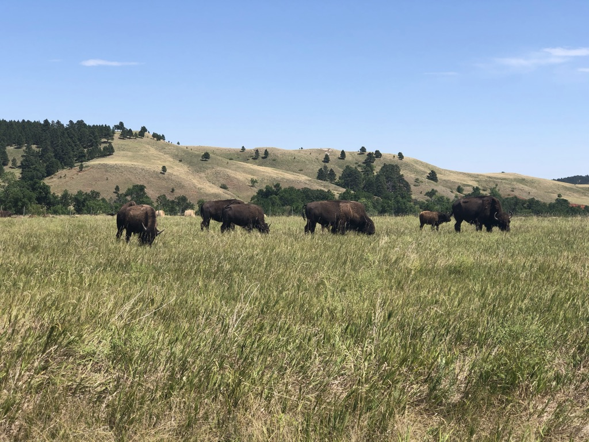
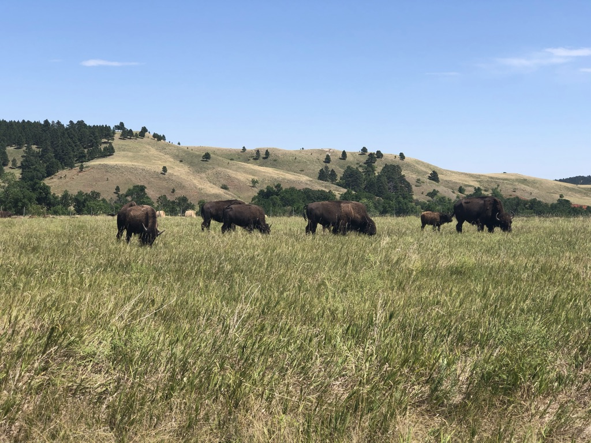
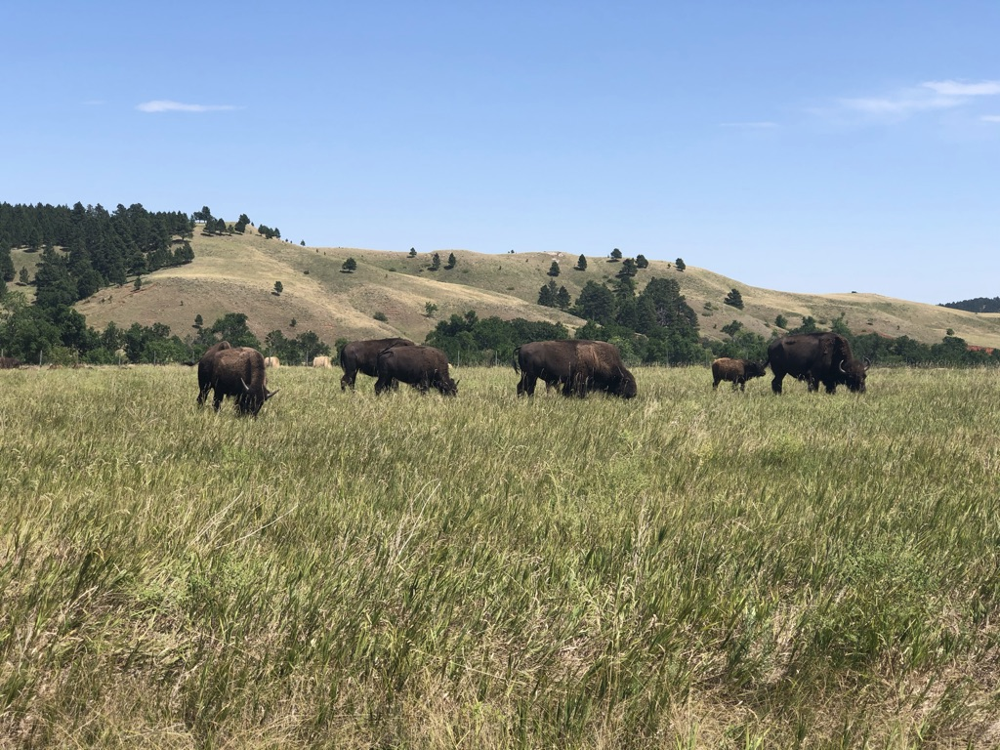

South Dakota
South Dakota
I visited the state of South Dakota in the year of 2020 during covid-19 pandemic.
Since we were all locked down at home and most of the places in big cities were closed, my friends and I decided to take a trip to South Dakota to check out Mount Rushmore.
Visiting Mount Rushmore was on my bucket list of places I wanted to visit, and this was a time to go visit and enjoy the great outdoors.
Check out the other states
>
×


 


